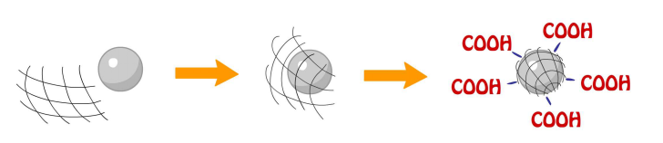
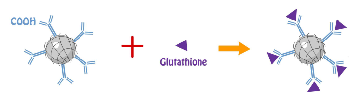
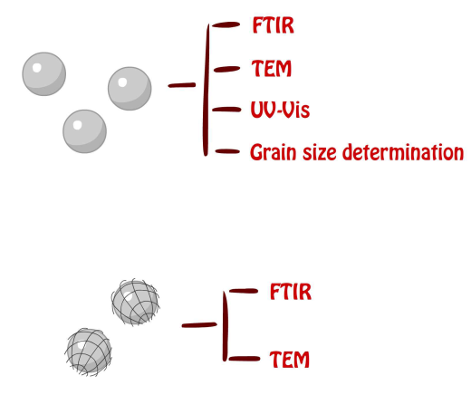
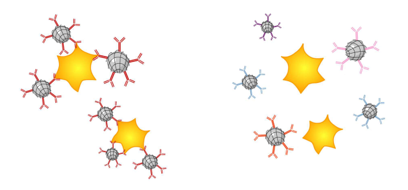
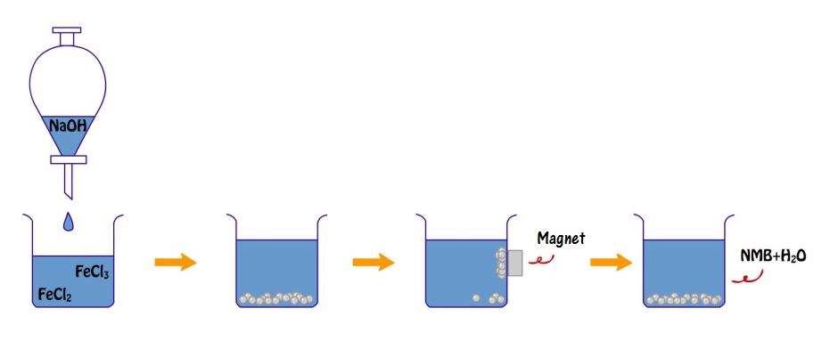
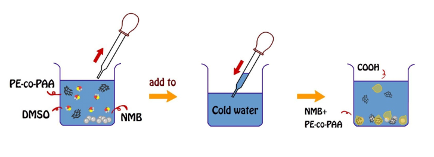
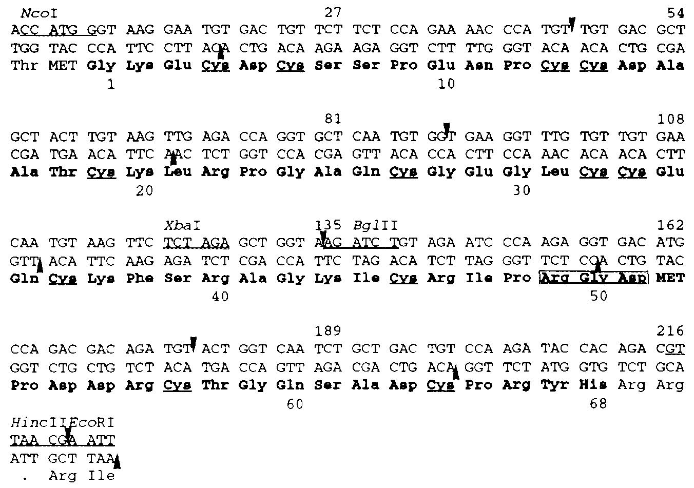
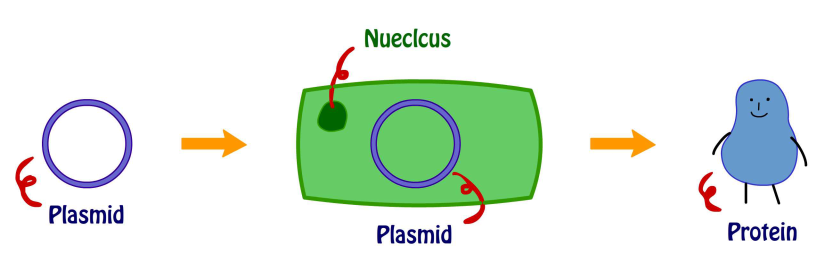

Design
We divided our design into three parts:

Synthesis and Characterization of
Nano-Magnetic Carriers
Background
Nano-magnetic beads (NMBs) are nanoscale magnetites (Fe3O4) with diameter ranging from 1 to 100 nanometers (nm) that have high magnetization values. They can be synthesized by the following chemical reaction:
2Fe3++Fe2++8OH-->Fe3O4+4H2O
To be a drug, protein or antibody carrier, NMBs are first coated with a film of poly [ethylene-co- (acrylic acid)] (PE-co-PAA) blended with PAA at the ratio of 4:1.
PAA of the compound provides carboxyl group for antibody (anti-αIIb of platelet integrin) and tripeptide (glutathione) conjugation utilizing the chemical reaction EDC/NHS cross-linking of carboxylates in which carboxylate react with EDC to form an unstable reactive o-acylisourea ester then convert into semi-stable amine-reactive NHS ester with the addition of sulfo-NHS; lastly, semi-stable amine-reactive NHS ester reacts with glutathione to form a stable amide bond [1].

Purified NMBs were examined by FTIR, TEM, UV-Vis spectrum and grain size determination to ensure the quality of the products. FTIR was utilized to provide detailed information of the functional groups within the product by analyzing vibration of each bond caused by infrared radiation. TEM was utilized to provide actual images of the NMBs both with and without PE-co-PAAB41 film in order to obtain the size and shape of each nanoparticle; more importantly, the average diameter of the product is for quality control. UV-Vis spectrophotometry informed us about the changes in absorbance of products with different concentration and grain size analysis provides an estimated size of the nanoparticles.

Our intention is to create a system for assessment of the amount of platelet integrin αIIb or αIIbβ3 concentrations by using nanoparticles coated with anti-αIIb or recombinant protein of GST fusion with rhodostomin (GST-RHO, a 68 amino acid peptide from snake venom, which can specifically bind to platelet integrin αIIbβ3) [2-4] and compared with the sensitivity of western blot analysis. The BluBox, a device invented by BluSense Diagnostic, provides a quantitative measurement of sample by optically measuring the Blu-ray units combined with sets of parameters by which is capable of detecting samples at low amounts.

Methods
Synthesis of NMBs
Two hundred and fifteen mg of FeCl2•4H2O(s) and 350 mg of FeCl3(s) were dissolved in 200 ml DI water, stirred with a stirring bar while heated up to 60°C; in addition, 350 mg of NaOH(s) were dissolved into 50 ml of DI water. Right after the Fe2+ and Fe3+ solution reached 60°C, NaOH(aq) was added one drop per four (to eight) seconds. The aqueous mixture was cool down by cold water after all NaOH(aq) was applied and the NMBs were collected using a magnet then washed by DI water to decrease the pH value.
2FeCl3(s)+FeCl2•4H2O(s)+8NaOH->Fe3O4(s)+8H2O+8NaCl
FTIR of powder sample with KBr as a matrix
Powder sample and KBr(s) was ground into fine powder by agate mortar and pestle till no crystallite was seen. A thirteen mm pellet press was assembled, the disk was placed at the bottom while enough powder was added to cover the disk and the column was inserted. The die was placed onto a hydraulic press and pumped to 3000 psi; subsequently, pressure was released and the base was removed. The disk along with the column was removed and the pellet in between was collected. The pellet was inserted into the IR sample holder and the FTIR spectrum was measured.
UV-Vis spectrophotometry and grain size analysis of NMBs
Solution of NMBs was diluted into six different concentrations ranging from 0.001 to 0.02 mg/ml and samples were vibrated in a supersonic vibration machine to separate aggregated clusters and to evenly distribute the nanoparticles. Both programs were run with water as background and the results were transformed to plots.

Coating of PE-co-PAA onto NMBs
PE-co-PAA was dissolved in DMSO to produce a solution with the concentration of 5x10-2 mg/ml. Ten mg of dried NMBs were added into 50 ml of the diluted PE-co-PAA/DMSO solution; in addition, a glass of 600 ml DI water was cooled by ice. Both beakers of 600 ml DI water and PE-co-PAA/DMSO solution with NMBs were vibrated by a supersonic vibration machine to make the solution more evenly distributed. The aqueous mixture of PE-co-PAA and NMBs was added into the cold DI water one drop at a time. Coated NMBs were collected using a magnet, then washed with DI water, and stored in a bottle with 5 ml of DI water added.
Conjugation of glutathione or anti-αIIb antibodies onto PE-co-PAA shield
One ml of NMBs was mixed with 1 ml of 0.5 M activation buffer (0.5 M MES mixed with 2.5 M NaCl), and 2.94 mg of EDC and 3.53 mg of NHS. Two ml of PBS was added, completely mixed and the solution was placed at room temperature for 15 min. One mg of glutathione or 0.1 µl of anti-αIIb antibodies (Proteintech #24552-1-AP) was dissolved in 1 ml of PBS in another tube. Two solutions were mixed and placed at room temperature for two hours in dark; subsequently, the solution was centrifuged at 1200 rcf for 5 min to isolate coated NMBs from solution of surplus glutathione for total glutathione assay. NMBs with glutathione were then treated with GST-RHO(RGD) or GST-RHO(RGE) and incubated for two hours at room temperature.
Total glutathione assay
Before the glutathione standard was diluted by a two-fold serial dilution, glutathione was performed a 1:1000 dilution in 1X Assay Buffer. In a 96-well plate, 25 µl of the 1X Glutathione Reductase and 1X NADPH solution were added to each well. One hundred µl of the prepared glutathione standard or sample was added to each well. After 50 µl of the 1X Chromogen was added and mixed briefly, immediately, the absorbance at 405 nm was recorded at 1-minute interval for 10 min in the plate reader. The average of each standard was graphed against incubation time. The net slopes of every standard were plotted against the concentration of glutathione. The net slopes of samples were compared with the standard curve to determine the concentration of the samples.
References
[1] Grabarek, Z. and J. Gergely, Zero-length crosslinking procedure with the use of active esters. Anal Biochem, 1990. 185(1): p. 131-5.
[2] Chang, H.H., et al., Rhodostomin, an RGD-containing peptide expressed from a synthetic gene in Escherichia coli, facilitates the attachment of human hepatoma cells. Biochem Biophys Res Commun, 1993. 190(1): p. 242-9.
[3] Chang, C.P., et al., Positional importance of Pro53 adjacent to the Arg49-Gly50-Asp51 sequence of rhodostomin in binding to integrin αIIbβ3. Biochem J, 2001. 357(Pt 1): p. 57-64.
[4] Chen, C.Y., et al., Effect of D to E mutation of the RGD motif in rhodostomin on its activity, structure, and dynamics: importance of the interactions between the D residue and integrin. Proteins, 2009. 76(4): p. 808-21.
Expression of recombinant rhodostomin for detection
Background
Rhodostomin (RHO) from Calloselasma rhodostoma’s venom contains 68 amino acids with an Arg49-Gly50-Asp51 (RGD) sequence and 12 cysteine residues. RHO has a high binding affinity to platelet integrin αIIbβ3 through its RGD sequence to compete out the fibrinogen binding which leads to inhibit platelet aggregation [1-3]. While the residue of aspartic acid of RHO is substituted by glutamic acid, RHO (RGE) loses its binding affinity to platelets [4].
In this project, we expressed RHO (RGD) and RHO (RGE) in E. coli to use as a ligand for detection of integrin αIIbβ3. Plasmids, pGST-RHO(RGD) and pGST-RHO(RGE), for expressing RHO (RGD) and RHO (RGE), respectively, were originally derived from synthetic genes fused with glutathione S-transferase (see Figure 1) [1].

Figure 1. Nucleotide sequence of the synthetic Rho gene
The 11 oligonucleotides covering two complementary strands of Rho gene were used for assembling of Rho gene. Five of them are continuous which represent the coding strand of Rho gene while the complementary strand is covered by six continuous segments. The amino acid sequence is presented in a three letter abbreviation and the 68 amino acids of RHO are indicated by boldface letters. The residues of cysteine are underlined and the Arg49-Gly50-Asp51 sequence is boxed.
After being induced by IPTG, the fusion proteins, GST-RHO(RGD) and GST-RHO(RGE) expressed in E. coli, can be purified by glutathione-conjugated Sepharose beads or glutathione-conjugated nano-magnetic beads for further platelet adhesion assay, western blot analysis, EIA or BluBox analysis.
Methods
Transformation of pGST-RHO(RGD) and pGST-RHO(RGE) into competent DH5α cells
After competent DH5α cells were thawed on ice, 5 µl each for GST-RHO(RGD) and GST-RHO(RGE) plasmids were added into competent DH5α cells and then transferred onto plates. Five to ten glass platting beads were added to each plate and gently shaken to allow all samples to be evenly dispersed on the plates. Glass beads were then poured into the beaker with ethanol. The plates were incubated at 37℃ for 12 hours; afterward, plasmids were isolated from colonies and the DNA was sequenced (Tri-I Biotech, Inc.).
Transformation of pGST-RHO(RGD) and pGST-RHO(RGE) into BL21 competent cells
Plasmids isolated and verified from DH5α cells were transformed into BL21 competent cells for protein expression. Repeat the procedure as mentioned above, 5 µl each for GST-RHO(RGD) and GST-RHO(RGE) were added into BL21 competent cells and transferred onto plates.
Small-scale expression of GST-RHO(RGD) and GST-RHO(RGE)
Colonies consist of pGST-RHO(RGD) and pGST-RHO(RGE) from BL21 were inoculated into 2 tubes of 5 ml LB broth with ampicillin, respectively. The cultures were shaken overnight at 37℃, 160 rpm, and then refreshed by transferring 100 µl each overnight culture into 2 new tubes of 5 ml LB broth with ampicillin. Cultures were shaken at 37℃, 160 rpm for another 2 hours. Bacteria density was measured using a spectrophotometer (O.D.600). Protein expression was induced by adding 10 µl of 100 mM IPTG (final concentration: 1 mM IPTG) into the “Induced” tubes. All tubes (induction and non-induction) were shaken for additional 3 hours at 37℃, 160 rpm. Bacteria were collected by centrifugation and lysed for SDS-PAGE analysis.
Large-scale expression of GST-RHO(RGD) and GST-RHO(RGE)
Colonies consist of pGST-RHO(RGD) and pGST-RHO(RGE) from BL21 were inoculated into 2 tubes of 5 ml LB broth with ampicillin respectively. The cultures were shaken overnight at 37℃, 160 rpm. Culture was first refreshed by transferring 100 µl from each overnight culture into 2 flasks containing 500 ml LB broth with ampicillin.After the bacteria growth reaching O.D. 0.6, IPTG was added as described above. Induced proteins were examined by SDS-PAGE and purified by glutathione-coated Sepharose or nano-magnetic beads.
SDS-PAGE gel analysis
10% SDS-PAGE Gel was assembled following the laboratory manual [5] and proteins samples from bacteria lysates were loaded. One hundred voltage and 180 V were used to run separating gel and stacking gel respectively. The stacking gel was removed and washed with ddH2O and F1 Rapid Gel Stain was added for staining. The gel was then washed with ddH2O, laid between two sheets of cellophane on top of a glass plate, and dried overnight in the ventilated hood [6].
GST pull-down assay
The intact platelets were lysed with RIPA. The platelet lysate was then pulled down by GST-fusion-protein-coated glutathione Sepharose beads. The pull-down proteins were analyzed by SDS-PAGE. After electrophoresis, the proteins were transferred to a PVDF membrane and detected with primary antibodies CD41/integrin αIIb rabbit polyclonal antibodies, and donkey anti-rabbit IgG HRP as secondary antibodies against the integrin αIIb antibodies.
Cell attachment assay
To know whether recombinant rhodostomin proteins can interact with integrins on cancer cell membrane to facilitate their attachment, we performed cell attachment assay. Cover slips were pre-coated with purified GST-RHO(RGD) or GST-RHO(RGE) proteins for 3 hours and then washed with PBS three times. After have blocking with BSA, we seeded proper number of cancer cells (HeLa and HuH-7) onto cover slips for 15 minutes. Unattached cells were removed by PBS wash. Cover slips were then mounted on slide and observed with a microscope and photographed.
References
[1] Chang, H.H., et al., Rhodostomin, an RGD-containing peptide expressed from a synthetic gene in Escherichia coli, facilitates the attachment of human hepatoma cells. Biochem Biophys Res Commun, 1993. 190(1): p. 242-9.
[2] Chang, H.H., et al., Application of Recombinant Rhodostomin in Studying Cell Adhesion. J Biomed Sci, 1997. 4(5): p. 235-243.
[3] Chang, C.P., et al., Positional importance of Pro53 adjacent to the Arg49-Gly50-Asp51 sequence of rhodostomin in binding to integrin αIIbβ3. Biochem J, 2001. 357(Pt 1): p. 57-64.
[4] Chen, C.Y., et al., Effect of D to E mutation of the RGD motif in rhodostomin on its activity, structure, and dynamics: importance of the interactions between the D residue and integrin. Proteins, 2009. 76(4): p. 808-21.
[5] Life Science Laboratory Manual, Department of Biomedical Sciences, Chang Gung University (September, 2016).
Platelet preparation and protein analysis
Background
Platelets are anucleated discoid cells that function as the "band aids of the blood stream" by controlling bleeding. The integrins of the platelet are a large family of adhesion receptors that mediate cell-extracellular matrix (ECM) and cell-cell interactions. Among them, integrin αIIbβ3 (CD41/CD61) or called glycoproteins IIb/IIIa is the major integrin on platelets. The function of αIIbβ3 is causing the aggregation of platelets, by binding to fibrinogen and von Willebrand factor which can bridge platelets together, or other ligands, such as vitronectin and fibronectin modulate aggregation [1-2].
Platelets are derived from megakaryocytes which are present in bone marrows. In healthy people, platelet counts are between 1.3~4.5×105/µl. However,abnormal levels of growth factors, e.g., thrombopoietin, stimulate megakaryocytes biogenesis and maturation, which leads to high platelet production (thrombocytosis, platelets number > 4.5×105/µl) or low platelet production (thrombocytopenia, platelets number > 1.3×105/µl) in blood. In addition, many platelet disorders have been identified, including autoimmune disease (alloimmune thrombocytopenia) and genetic mutations of integrin αIIbβ3 (Glanzmann thrombasthenia). A simple detection of various types of platelet function disorder is demanded in clinical examination. In this project, we aimed to develop magnetic nanotechnology to detect the level of integrin αIIb or αIIbβ3 and platelet count using anti-integrin αIIb or rhodostomin (RHO), a disintegrin isolated from the snake venom. The RHO contains a sequence of Arg49-Gly50-Asp51 (RGD) that specifically binds to integrin αIIbβ3 , and inhibits aggregation of platelet adhesion to fibrinogen [3].
Methods
Blood smear for differential interference contrast (DIC) microscope
The whole blood was collected from four Sprague Dawley (SD) rats individually. A drop of blood, about 4 mm in diameter, was placed on the slide (near the end). The drop was spread by using another slide (as a spreader) and placed the spreader at a 45˚ angle, backing into the drop of blood. The spreader was moved slowly to assured the smear was thin and well-distributed; afterwards, covered by a cover slip. Industrial oil was dripped on the smear before it was put on the DIC microscope and pictures were taken.
Platelet purification, counting, and protein quantification
The whole blood was centrifuged at 150g for 30 minutes to obtain platelet-rich plasma (PRP). The PRP was centrifuged at 1000g for 1 minute to remove the remaining red blood cells and it was centrifuged again at 1000g for 15 minutes to obtain platelet pellet by discarding the supernatant. The platelet pellet was resuspended in Tyrode's buffer [4] with apyrase (1 unit/ml), whose volume was equal to the whole blood; afterwards, the platelet suspension was centrifuged at 1000g for 15 minutes, and the supernatant was discarded. The pellet of platelets was resuspended in Tyrode's buffer again with the same volume of the whole blood. For platelet counting, 10 µl of platelet suspension was diluted by ten thousand folds. The rest of the platelet suspension was centrifuged at 1000g for 15 minutes and the supernatant was discarded. The platelet pellet was resuspended in 200 µl of cell lysis buffer, placed on ice for 30 minutes, and subsequently centrifuged at 13200 rpm for 10 minutes. Bradford assay was utilized for protein quantification of the supernatant.
Western blot of platelet lysate
The platelet lysate was diluted to five different protein concentrations and then boiled with sample buffer at 100℃ for 5 minutes. The diluted samples were analyzed by 8% SDS-PAGE gel and transferred to a nitrocellulose membrane. The nitrocellulose membrane was stained with Ponceau S washed with ddH2O or 1X TBS. The membrane was blocked by 5% non-fat milk in 1X TBST for 1 hour. Integrin αIIb rabbit polyclonal antibody diluted by 1X TBST (1: 1000) was used as primary antibody to detect diluted samples and the reaction was performed at 4℃ for 16 to 18 hours. Donkey anti-rabbit IgG HRP antibody diluted in 1X TBST (1: 10000) was used as secondary antibody. Chemiluminescence reagent (Millipore) was added subsequently on the membrane and incubated for 5 minutes at room temperature and detected by Bio-Rad detector.
Western immunoblotting of the integrin αIIb
Mag-Beads-Protein G (TOOLS) were washed by 1X PBST for 3 times, Mag-Beads-Protein G were incubated for 30 minutes at room temperature with 1 µl CD41/integrin αIIb rabbit antibodies (Proteintech #24552-1-AP) or 0.5 µl IgG rabbit antibodies for antibody conjugation. Lysed platelets in different concentration were mixed with antibodies-conjugated Mag-Beads-Protein G, incubated overnight at 4℃, and the platelets/Mag-Beads-Protein G complexes were washed by 1X PBST. Fifteen µl of sample buffer was added and the solution was boiled for 5 minutes at 100℃. 8% SDS-PAGE was performed followed by western blot.
References
[1] Ma, Y.Q., J. Qin, and E.F. Plow, Platelet integrin αIIbβ3: activation mechanisms. J Thromb Haemost, 2007. 5(7): p. 1345-52.
[2] DeSimone, D.W., et al., The integrin family of cell surface receptors. Biochem Soc Trans, 1987. 15(5): p. 789-91.
[3] Chang, C.P., et al., Positional importance of Pro53 adjacent to the Arg49-Gly50-Asp51 sequence of rhodostomin in binding to integrin αIIbβ3. Biochem J, 2001. 357(Pt 1): p. 57-64.
[4] Mustard, J.F., R.L. Kinlough-Rathbone, and M.A. Packham, Isolation of human platelets from plasma by centrifugation and washing. Methods Enzymol, 1989. 169: p. 3-11.